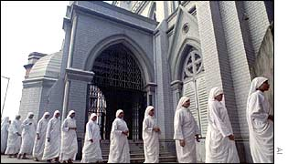

Indian
rationalists call Mother Teresa's miracle
hocus-pocus
Sat Oct 18, 1:12 AM ET
CALCUTTA, India (AFP) - Members
of an Indian rationalist group demanded the arrest
of the head of Mother Teresa's order, arguing she
fudged facts to claim a mircle to secure sainthood
for the Roman Catholic nun.
Sat
Oct 18, 1:12 AM ET
The Nobel laureate's
sainthood stems from the claims of
35-year-old Indian tribal woman,
Monica Basra, who insists that she
was cured of stomach cancer by
Mother Teresa(AFP/Deshakalyan
Chowdhury)
The Nobel laureate's sainthood stems from the
claims of 35-year-old Indian tribal woman, Monica
Basra, who insists that she was cured of stomach
cancer by Mother Teresa.
Friday's protesters said it was a fraud
perpetrated by the MoC and Mother Teresa's
successor, Sister Nirmala.
Prabir Ghosh, chief of Science and Rationalists'
Association of India, said the forum registered
fraud cases with the police against Sister Nirmala.
The rationalists also performed magic tricks,
saying that sleight of hand cannot be turned into a
platform for canonisation.
Rationalists
say Mother Teresa's miracle claim is
'bunkum'
Krittivas
Mukherjee, Indo-Asian News Service
Kolkata, October 17
A group of rationalists on Friday
demonstrated against a miracle attributed to
Mother Teresa that is being cited by the
Vatican for her beatification.
The rationalists also lodged a complaint
with the police, urging action to stop
"propaganda" about the miracle and
"take action" against Sister
Nirmala, who heads the Missionaries of
Charity order set up by Mother Teresa.
"We ask the church not to sully the
image of Mother Teresa by attributing to her
false claims of miracles," Prabir Ghosh,
general secretary of Science and
Rationalists' Association of India, said at
a street side meeting.
The rationalists have described as
"bunkum" the claim that an Indian
tribal woman was cured of a tubercular
tumour after she prayed to the revered nun
in 1998.
The Pope has approved the miracle of
Mother Teresa and is set to beatify her on
Sunday in Rome, taking her a step closer to
sainthood.
The rationalists distributed pamphlets to
passers-by in a congested eastern Kolkata
locality.
"Do not ridicule Mother Teresa's
love and dedicated acts by false
claims," read the single-page leaflet
in English signed by Ghosh.
"We demand from the state and
central governments strong legal action
against Sister Nirmala for violating Indian
laws," it also said.
The volunteers held aloft placards that
read: "Don't mock Mother Teresa",
"Mother don't bargain for
sainthood", "Is good work not
enough?" and "Why resort to
fraud?"
Ghosh alleged that Sister Nirmala had
"turned this sainthood thing into a
business."
Ghosh said if the authorities did not
take action, the rationalists would sue
Nirmala.
He said the rationalists had no objection
to Mother Teresa being made a saint,
"but why take recourse to falsehood for
a religious cause?"
The rationalists contend that if supposed
miracles were passed off as medical cure,
poor Indians would run to 'shamans' and 'godmen'
for treating illness instead of going to
doctors.
Even doctors who treated the 35-year-old
tribal woman, Monica Besra, claim that she
had been cured with nine months of
anti-tubercular medication.
Mother Teresa was born Agnes Gonxha
Bojaxhiu in Skopje, Macedonia, on August 26,
1910. She came to the city in 1929, began a
life dedicated to the service of the poor
and dying and came to be widely considered
as a living saint.
She founded the Missionaries of Charity
in 1949, a year after which it received the
Church's approval. The order has about 700
centres in 123 countries run by about 4,000
nuns and sisters.
Mother Teresa received the Nobel Peace
Prize in 1979. She died here in 1997.
Friday,
4 October, 2002, 11:59 GMT 12:59 UK
Mother
Teresa's 'miracle' challenged

Mother Teresa set up the
Missionaries of Charity
By
Subir Bhaumik BBC
correspondent in Calcutta
A miracle attributed to Mother Teresa has
been challenged in the Indian state of West
Bengal.
A rationalist group in the state says a woman
reportedly cured of cancer by placing a
photograph of the nun on her stomach had
subsequently received treatment in government
hospitals.
Mother Teresa: Revered by
many
Doctors who treated the woman, Monica Besra,
say she was in pain several years after Mother
Teresa died.
Vatican officials earlier this week approved
the miracle, and said this would strengthen her
case for sainthood.
For several years Prabir Ghosh, general
secretary of the Indian Rationalist and
Scientific Thinking Association, has challenged
Hindu "godmen" and exposed their
miracles as what he describes as cheap hypnotic
tricks better performed by magicians.
Now he is challenging the claim of the
Missionaries of Charity, who say a photograph of
their founder, Mother Teresa, when placed over
the stomach of 30-year-old Monica Besra, cured
her of a tumour.
Undue publicity
Mr Ghosh described the claim as bogus and
typical of the process of cult building in all
religious orders.
He says Mother Teresa could be considered for
sainthood for her services to the poor, adding
that it was an insult to her legacy to bestow
her sainthood on false claims of miracles.
Mr Ghosh says several doctors have reported
to the West Bengal government that Ms Besra
continued to receive treatment long after Mother
Teresa died.
He said Ms Besra was admitted to hospital
with chronic headaches and severe abdominal pain
at least a year after Mother Teresa's death.
The doctors say that if the story of the
miracle gets what they describe as undue
publicity, illiterate and poor villagers may
stop taking medical treatment for their maladies
and seek miracle cures.
Mr Ghosh says his association, which seeks to
promote rational and scientific thinking in
India, would expect the West Bengal Government
to take legal action against the Missionaries of
Charity.
When contacted, the Missionaries of Charity
did not react to the charge.
October
21, 2002 / VOL. 160 NO. 15 LETTER FROM
CALCUTTA What's
Mother Teresa Got to Do with It? Monica says she's
proof of a miracle by the late nun; her
husband begs todiffer
DEV NAYAK FOR TIME
Seiku Murmu
and Monica Besra, with a portrait of
the prospective saint
Domestic bliss has fled the household of
Seiku Murmu and his wife Monica Besra—and
it's all Mother Teresa's fault. Monica is a
celebrity in the small village of Dangram,
460 miles northeast of Calcutta, because she
is the beneficiary of what many Catholics
believe is the first posthumous miracle of
Mother Teresa, founder of the Missionaries
of Charity. On Sept. 5, 1998, the first
anniversary of the nun's death, Monica was
suffering abdominal pain caused, she
believed, by a tumor. But the purported
tumor vanished when Monica applied a
medallion with an image of the late Albanian
nun to the site of her pain. In August 2001,
Monica's miracle was supplied to the Vatican
as part of the fast-tracking of Mother
Teresa's canonization. Two weeks ago, the
Vatican recognized the 1998 miracle,
beginning the process of Mother Teresa's
beatification, a major step toward
sainthood.
All this irritates Monica's husband Seiku.
"It is much ado about nothing," he
says. "My wife was cured by the doctors
and not by any miracle." He is peeved
at his wife's fame, in part because the
press is constantly at his doorstep. "I
want to stop this jamboree, people coming
with cameras every few hours or so." He
concedes that the locket is part of the
story of Monica's ordeal but says no one
should suppose there was a cause-and-effect
relationship between it and the cure.
"My wife did feel less pain one night
when she used the locket, but her pain had
been coming and going. Then she went to the
doctors, and they cured her." Monica
still believes in the miracle but admits
that she did go to see doctors at the
state-run Balurghat Hospital. "I took
the medicines they gave me, but," she
insists, "the locket gave me complete
relief from the pain."
Dr. Tarun Kumar Biswas and Dr. Ranjan
Mustafi, who treated Monica over several
months, say their patient indeed had a lump
in her abdomen, but it was not a full-grown
tumor. "She responded to our treatment
steadily," says Mustafi. Monica's
medical records contain sonograms,
prescriptions and physicians' notes that
could conceivably help prove whether science
or the icon worked the cure. But the records
are missing. Monica says Sister Betta of the
Missionaries of Charity took them away two
years ago. "It's all with her,"
says Monica. A call to Sister Betta, who has
been reassigned to another post of the
Charity, produced a "no comment."
Balurghat Hospital officials say the
Catholic order has been pressuring them to
say Monica's cure was miraculous. Calls to
the office of Sister Nirmala, Mother
Teresa's successor as head of the order,
produced no comment as well.
The vacuum created by that silence is
being filled by conspiracy theorists who see
the Missionaries of Charity overeagerly
producing proof that their founder is within
the gates of heaven. That chorus is
amplified by vociferous debunkers, among
them Prabir Ghosh, head of the Science and
Rationalist Association of India. Ghosh, who
is based in Calcutta, has deflated the
claims of many of India's self-proclaimed
Hindu holy men and miracle workers. He
doesn't believe that Mother Teresa's miracle
should be exempt from scrutiny. He says he
has no complaint "if she is declared a
saint for all the great work she has done
among poor people. But," he adds,
"she is not capable of any miracle. It
is indeed an insult to Mother Teresa to make
her sainthood dependent on some stupid
miracles." Ghosh tells Time that he
will shut down his association and turn over
its 2 million rupees ($40,000) to the
Catholic order if the sisters will put the
medallion to the test and have it cure
another tumor.
Back in the village of Dangram, Seiku
Murmu and Monica Besra sit at home and try
to live with their legacy from Mother
Teresa. Seiku grumbles, "This miracle
is a hoax." His honor is at stake, he
says, so he has to make it clear where he
stands with the facts. "We are not
liars." Monica quietly tends to her
five children and does not appear to take
issue with his use of the first person
plural. All she knows is that she has been
healed.